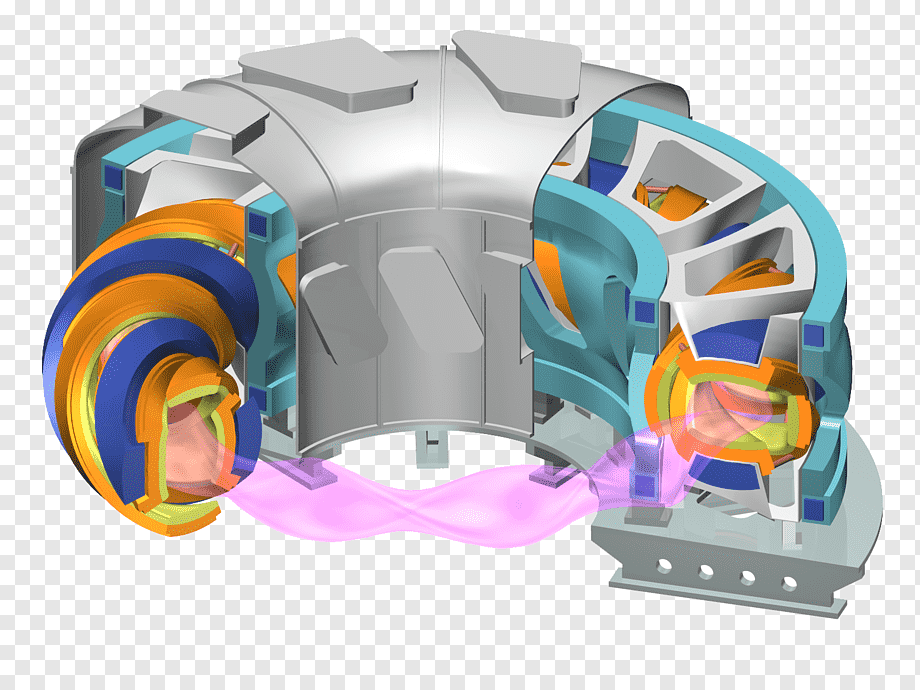

Lamont Sampson
GitHub
Blogs
10 'Star Trek' Technologies That Actually Came True
The Sci-Fi Dream of a ‘Molecular Computer’ Is Getting More Real

Fusion Energy: Potentially Transformative Technology Still Faces Fundamental Challenges
Is Star Trek’s warp drive possible?
7 futuristic space technologies that NASA is exploring